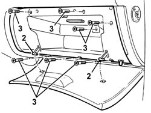
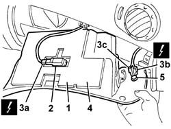

7040A31 flap assembly - r r
- Path
- Procedures > 70 FITTINGS > 7040 BODYSHELL INTERIOR TRIMS AND FITTINGS > 7040A passenger compartment trim > 7040A31 flap assembly - r r
- Kind
- repair procedure (removal / refitting; the operation number is the code)
- Applies to
- all engines; all production periods
- Interactive page
- https://sloeber94.github.io/elrnDB-a147/en/#/3025801
Applies to: all engines; all production periods
 Removing
Removing
 Refitting
Refitting1. Open the dashboard compartment flap.
2. Release the ends of the end of travel rods.
3. Undo the bolts fixing the compartment.

Applies to: all engines; all production periods
1. Move the compartment slightly.
2. Release the courtesy light from its housing.
3. Disconnect the electrical connections (3a, 3b, 3c).
 | Name | Connector |
|---|---|---|
3a | Glove compartment light |
| Name | Connector |
|---|---|---|
3b | Glove compartment light |
| Name | Connector |
|---|---|---|
3c | Glove compartment light |
4. Recover the compartment.
4. If necessary, release the switch from its housing.

Applies to: all engines; all production periods
Refitting
RemovingCheck that the compartment is not damaged.
If removed, refit the switch in its housing.
Connect the electrical connection.
Fit the courtesy light in its housing.
Position the compartment.
Tighten the compartment fixing bolts.
Engage the ends of the end of travel rods, then close the flap checking that it is working properly.
Topics linked from this page (3)
- G30 Glove compartment light
- I15A Glove compartment light ( Connectors )
- I15B Glove compartment light ( Connectors )
Topics that link to this page (18)
- 3330D11 brake servo - r r including seperation from master cylinder - facia lining removed for rhd version
- 5020L10 additional heater system boiler - r r
- 5040A80 expansion/connection pipe - r r
- 5040B30 expansion valve (tube orifice) - r+r
- 5040C10 air conditioner box - r+r
- 5040C50 air conditioner heater radiator - r+r
- 5040C64 a/c evaporator - r+r
- 5040D52 air inlet and recirculation flap actuator - r r
- 5040D76 air contitioner distribution flap control motor - r r
- 5040D84 air conditioner left hand air mixer flap control motor - r r
- 5040D86 air conditioner right hand air mixer flap control motor - r r
- 5040D90 air conditioner system wiring bundle - r r
- 5505C28 intergrated engine bay and abs system wiring - r r
- 5505C34 intergrated instrument under facia front air bag wiring - r r
- 5580C22 AIR BAG MODULE - Passenger side - R.R.
- 7040A09 passenger air bag compartment cover - r r
- 7040A10 instrument facia trim - r+r
- 7040A97 facia trim support beam - r r